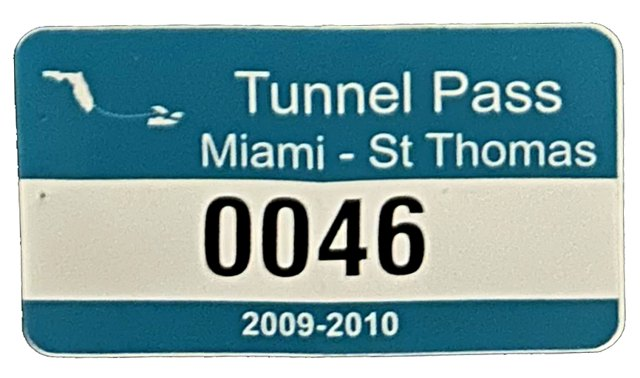
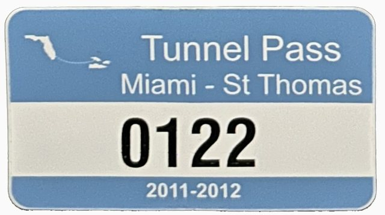
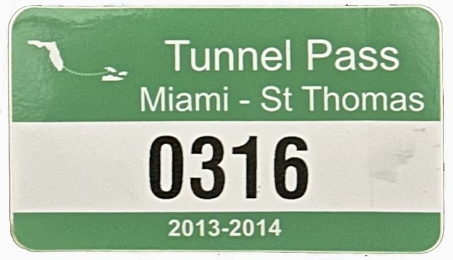
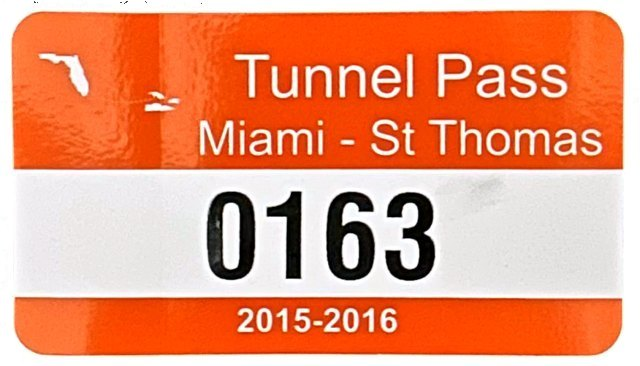
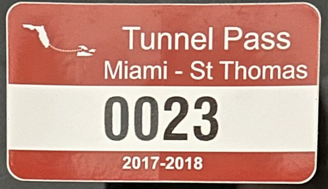
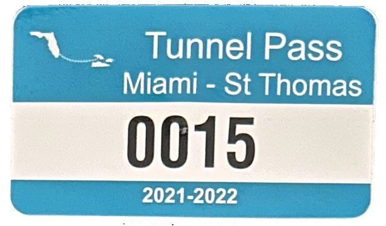
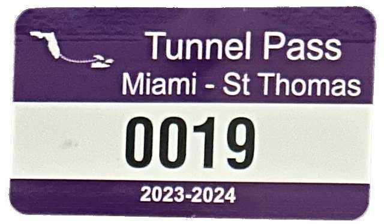

It started in 2009 as a joke: a toll pass for an imaginary tunnel between Miami and St. Thomas. It turned into a small badge of home for Virgin Islanders, wherever they live now.
A new pass comes out every two years, changing color the way registration stickers do. In 2019–2020 the tunnel was closed, and there was no pass.







Passes, prints and Island Viator gear aren't sold online right now. If you'd like one, email support@beanhop.com.
The whole way down it’s blue. Then you surface. No names, no pins: if you know, you know.